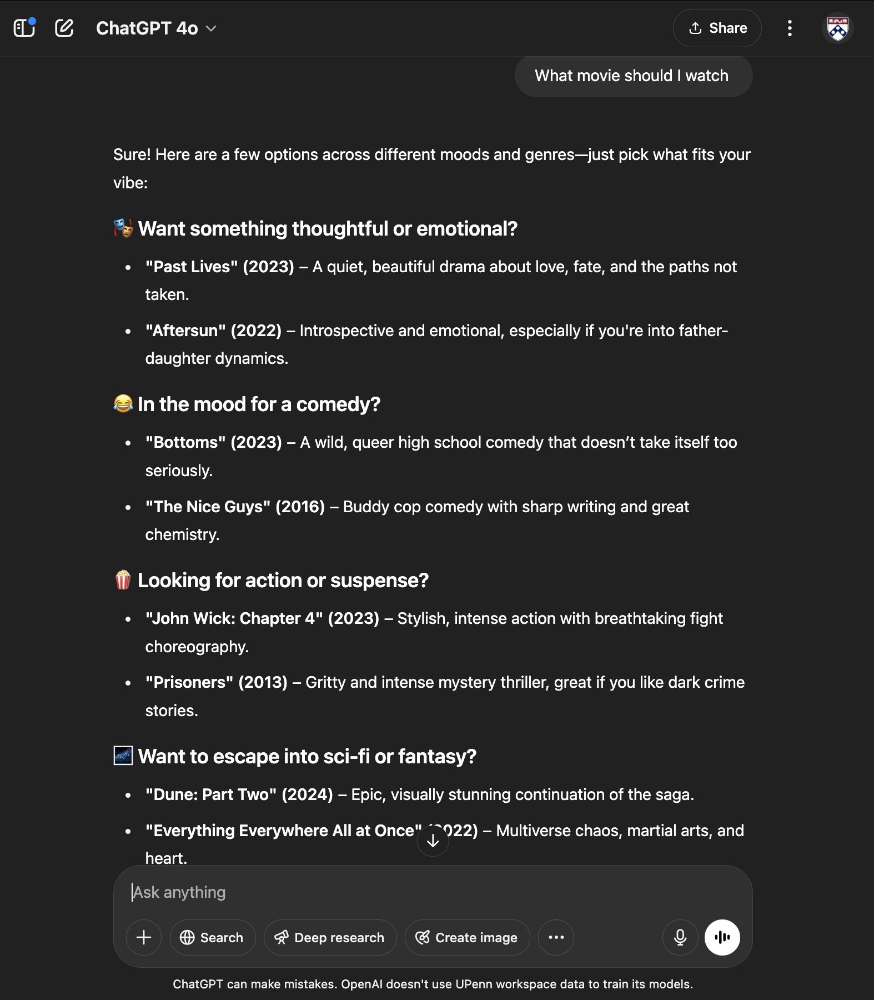
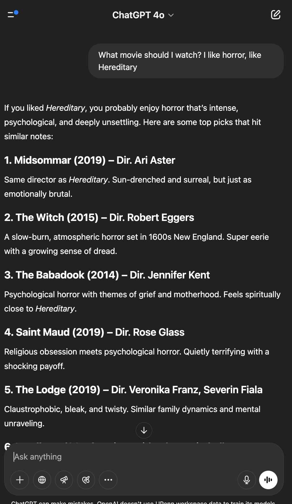
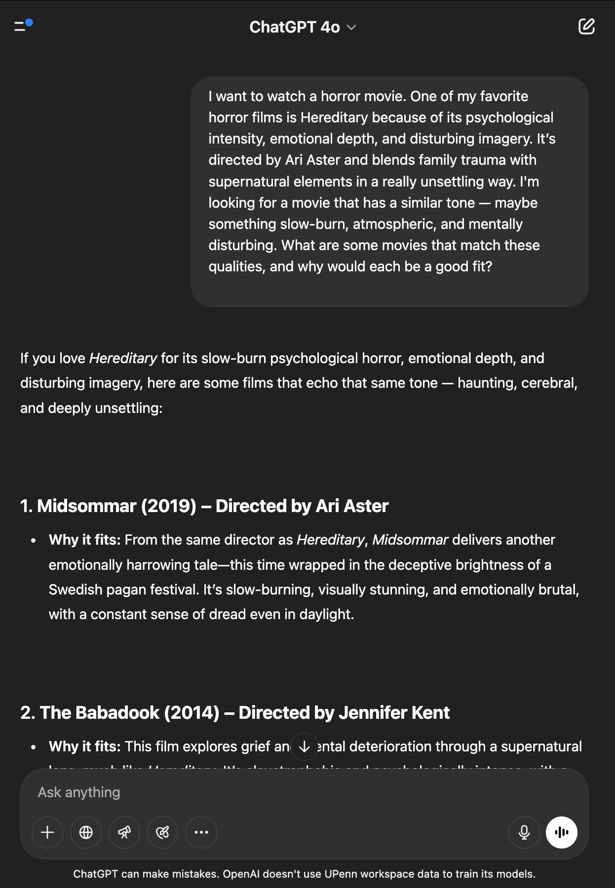

Google claims that “prompt enginnering can help you be more productive. It also says that using natural language to command a large language model could help propel a lot of the workflow on teams.
Google’s Tips to Becoming a World-Class Prompt Engineeer

Google recently released a 69 page paper on prompt engineering and there are 11 ways it categorizes prompting methods
- Direct Prompts (Zero-shot)
This type of prompting doesn’t provide any additional context or examples, but just provides the model with a direct instruction or question.
- One-, few- and multi-shot prompts
This method involves providing the model with one or more examples of the desired input-output pars before presenting the actual prompt .This can help the model better understand the task and generate more accurate responses.
- Chain of Thought Prompts
CoT prompting encourages the model to break down complex reasoning into a series of intermediate steps, leading to a more comprehensive and wellstructured final output.
- Zero-shot CoT Prompts
Combines chain of thought prompting with zero-shot prompting by asking the model to perform reasoning steps, which may often produce better output
- System prompting
Sets the overall context and purpose for the language model. It defines the big picture of what the model should be doing, like translating a language, classifying a review, etc.
- Contextual prompting
Provides specific details or background information relevant to the current conversation or task. It helps the model to understand the nuances of what’s being asked and tailor the response accordingly.
- Role Prompting
Assigns a specific character or identity for the language model to adopt. This helps the model generate responses that are consistent with the assigned role and its associated knowledge and behavior.
- Chain of Thought Prompting
Chain of Thought prompting is a technique for improving the reasoning capabilities of LLMs by generating immediate reasoning steps.
- Tree of Thoughts
It generalizes the concept of CoT prompting because it allows LLMs to explore multiple different reasoning paths simultaneously, rather than just following a linear chain of thought.
- ReAct (reason and act)
Is a paradigm for enabling LLMs to solve complex tasks using natural language reasoning combined with external tools allowing the LLM to perform certain actions, such as interacting with external APIs to retrieve information.
- Code prompting
Writing prompts for returning code.
Let’s try a few of these techniques to see which works the best for me
- Direct Prompt

I like how it doesn’t really question me further, but provides random movies across all genres. I like how it asks, “Want seomthing thoughtful” or “In the mood for comedy” as a way to engage my interests in certain types of movies. However, as a person who’s really indecisive, I want to hone in my search. Let’s go into other prompting techniques.
- One, few, and multi-shot prompts

This one got more specific, which helped me because it specified horror movies that are similar to Hereditary. For example, the list already has movies that I’ve watched, and I can confirm that it is very similar to the example movie.
- Chain of Thought Prompting

Honestly, even with more specific prompting, it recommended me the same movies as the previous ones. There were a few more suggestions, but still. But at the end, it asks would you prefer one that leans more towards supernatural horror, psychological breakdown, or cult/paranormal themes. Perhaps if I answered that, I could have more unique responses.
Conclusion
I definitely see the value in learning different prompting techniques—it’s a great way to steer AI toward more specific or useful responses. That said, after trying the second prompting technique, I didn’t notice a huge difference in the output. But to be fair, that might have more to do with the prompt I was using than the techniques themselves. There are only so many unique responses you can get when you’re asking for movie recommendations. For example, if I say I liked Hereditary, it’s no surprise that the model suggests Midsommar, since both are by the same director and share a similar tone.
I can see these techniques being a lot more powerful in other contexts—especially for tasks that require detailed instructions, like giving directions or writing code. In those cases, the structure and phrasing of a prompt can really change the outcome. Ultimately, I think it comes down to experimenting and figuring out what works best for the type of response you’re trying to get. Prompting is definitely a skill, and like anything else, it improves the more you play around with it.